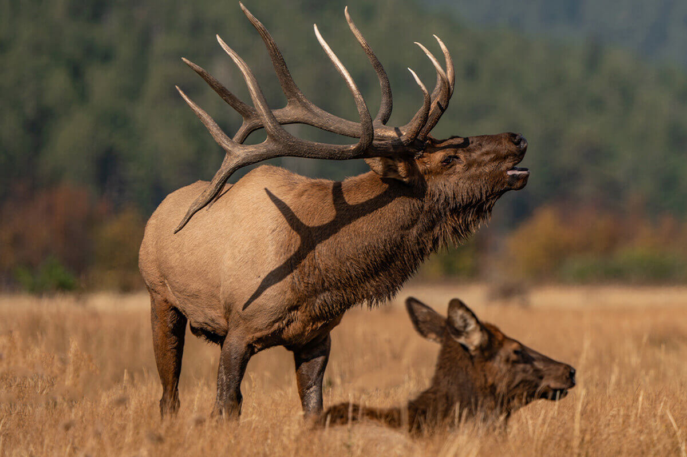
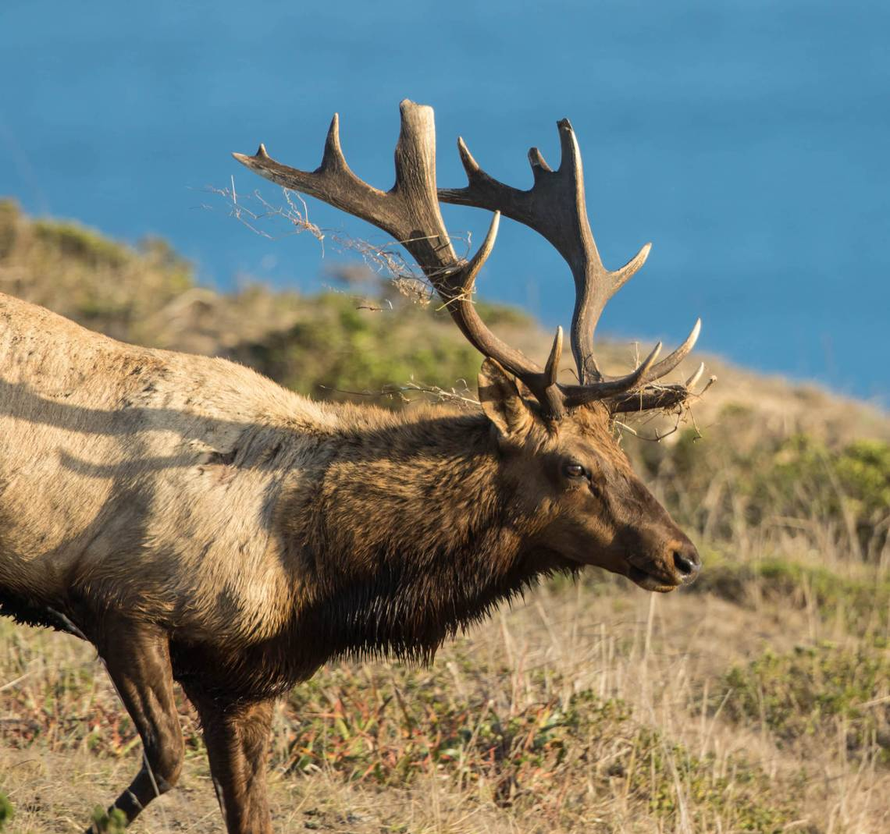
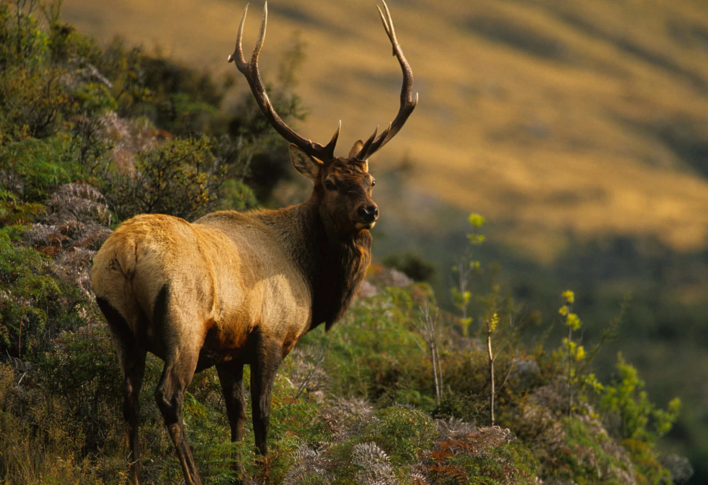

Elk Species in North America
The Rocky Mountain elk, also known as Cervus canadensis, is a large species of deer native to North America. They are characterized by their impressive antlers, which males shed and regrow annually. Elk have a distinctive reddish-brown coat in summer that turns to a grayish-brown in winter. They inhabit mountainous regions, forests, and grasslands, often forming herds. Known for their distinctive bugling calls during mating season, they are a vital part of their ecosystems and have significant cultural and recreational importance.
 Tule elk (Cervus canadensis nannodes) are a subspecies of elk native to California, known for their smaller size compared to other elk species. They typically have a dark brown coat and distinctive, long, slender antlers. Tule elk primarily inhabit grasslands and wetlands, particularly in California's Central Valley and coastal regions. Once on the brink of extinction, conservation efforts have helped their population rebound. They are known for their unique adaptations to their environment and are an important part of California's wildlife heritage.
Roosevelt elk (Cervus canadensis roosevelti) are the largest subspecies of elk, found primarily along the Pacific Coast of the United States, particularly in coastal forests of California, Oregon, and Washington. They have a dark, shaggy coat that varies from brown to gray and feature large, broad antlers. Roosevelt elk are known for their impressive size, with males typically weighing between 800 to 1,100 pounds. They prefer dense, forested habitats and are often found near rivers and estuaries. Social animals, they form herds and are known for their deep, resonant bugling calls during the mating season.